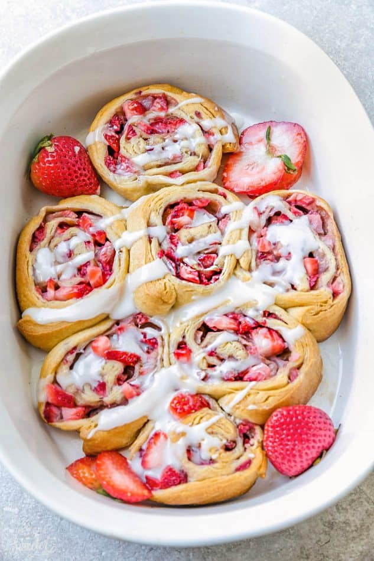

strawberry cinnamon rolls

Strawberry Cinnamon Rolls are extremely delicious and low in calorie count
They are so soft that once you take a bite, it will just melt in your mouth.
ingredients
- 2 1/4 cup diced strawberry
- 1 teaspoon cinnamon
- 3/4 tablespoon corn starch
- 2 tablespoon nutritional yeast
- 3/4 cup boiled low fat milk
- 1/2 cup brown sugar
- 2 cup whole wheat flour
- 1/4 tablespoon salt
- 1/2 cup melted unsalted butter
steps
- Preheat the oven to 350C. Then, take a large bowl, add milk, sugar, butter, salt and yeast. Stir together and then wait for 10 mins so that the mixture becomes frothy. Add flour and then mix well.
- Knead the dough prepared in step 1 for about 4-5 mins and let it rest for a while.
- Take a bowl and toss strawberries, cornstarch, and cinnamon. Your filling is ready now.
- On a well-floored surface, dust some flour and roll the dough and then add the strawberry filling on the top. Now, roll up the dough so that it forms the shape of the log and seal the ends of the roll.
- Now, cut the roll in 12 pieces and put them on a baking pan. Bake these rolls for about 20 mins and then once it's done, let it rest for 5 mins. Your strawberry cinnamon rolls are now ready to serve.